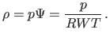

Next: Folder Structure Up: lowmachSolver: a low Mach Previous: lowmachSolver: a low Mach
The OpenFOAM (Open Field Operation and Manipulation) CFD Toolbox is a free, open source CFD software package produced by OpenCFD Ltd. It has a large user base across most areas of engineering and science, from both commercial and academic organisations. OpenFOAM has an extensive range of features to solve anything from complex fluid flows involving chemical reactions, turbulence and heat transfer, to solid dynamics and electromagnetics. It includes tools for meshing, notably snappyHexMesh, a parallelised mesher for complex CAD geometries, and for pre- and post-processing. Almost everything (including meshing, and pre- and post-processing) runs in parallel as standard, enabling users to take full advantage of computer hardware at their disposal.
By being open, OpenFOAM offers users complete freedom to customise and extend its existing functionality, either by themselves or through support from OpenCFD. It follows a highly modular code design in which collections of functionality (e.g. numerical methods, meshing, physical models, …) are each compiled into their own shared library. Executable applications are then created that are simply linked to the library functionality. OpenFOAM includes over 80 solver applications that simulate specific problems in engineering mechanics and over 170 utility applications that perform pre- and post-processing tasks, e.g. meshing, data visualisation, etc.
Details of OpenFOAM formulation are explained in [3] and [6]. From all the set of available solvers and libraries in OpenFOAM, the dieselFOAM solver and dieselSpray class (as implemented in version 1.7.1 of OpenCFD release) were the major pieces of code used in this work. To my knowledge, both were written by Niklas Nordin, [4].
The dieselSpray class handles the modeling of lagrangian particles and their submodels. Minor modifications were made in order to have more flexibility in boundary conditions and to adapt them to the experimental conditions.
The dieselFOAM solver couples the modeling of the lagrangian particles and the gas flow solution. The spray sources are explicitly treated and the coupling among variables is solved with PISO algorithm, see [3] and [2].
Minor modifications were added to the solution of low Mach number equations instead of the fully compressible formulation. They are briefly explained here, but the understanding requires from the reader some familiarity with OpenFOAM programming.
The thermodynamic pressure retained its original name p and is the pressure used in the state equation:
<createFields.H> volScalarField& p = thermo.p();and in the lagrangian models:
<createSpray.H>
spray dieselSpray
(
U,
rho,
p,
T,
composition,
gasProperties,
thermo,
g
);
A new scalar field was assigned to the dynamic pressure, volumeScalarField pd:
<createFields.H>
volScalarField pd
(
IOobject
(
"pd",
runTime.timeName(),
mesh,
IOobject::MUST_READ,
IOobject::AUTO_WRITE
),
mesh
);
The momentum equation was modified to be computed using the gradient of pd instead of p in the momentum predictor:
<UEqn.H>
fvVectorMatrix UEqn
(
fvm::ddt(rho, U)
+ fvm::div(phi, U)
+ turbulence->divDevRhoReff(U)
==
rho*g
+ dieselSpray.momentumSource()
);
if (momentumPredictor)
{
solve(UEqn == -fvc::grad(pd));
}
Finally, the the pressure equation is now a Poisson equation for the dynamic pressure and it uses the thermodynamic pressure for computing the density.
<pEqn.H>
fvScalarMatrix pdEqn
(
fvc::ddt(psi,p)
+ fvc::div(phi)
- fvm::laplacian(rho*rUA, pd)
==
Sevap
);
where psi or is the isothermal compressibility. For an ideal gas:
|  | (1) |
The time-dependence of the thermodynamic pressure was neglected (valid for open domains) and the therm fvc::ddt(psi,p) vanishes.
Rodrigo 2011-12-25